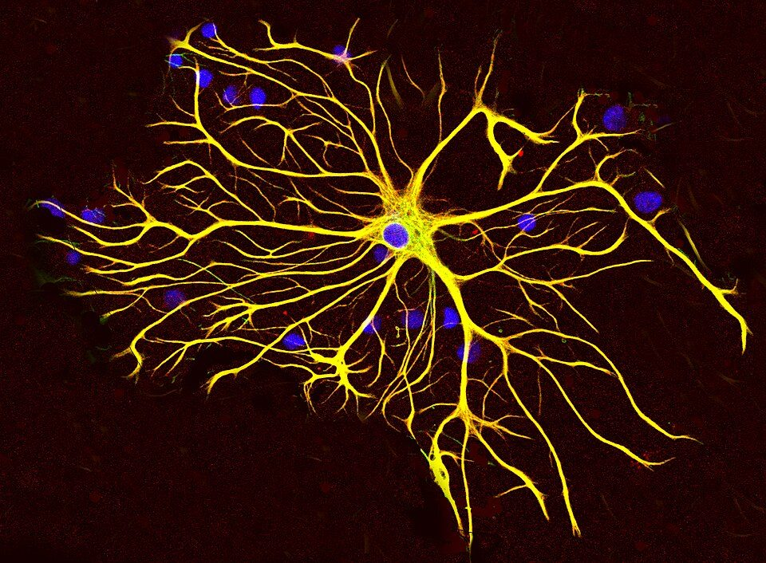
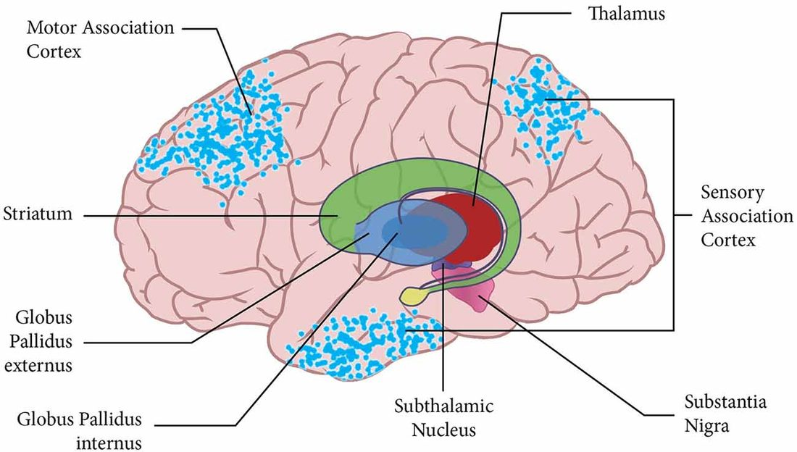
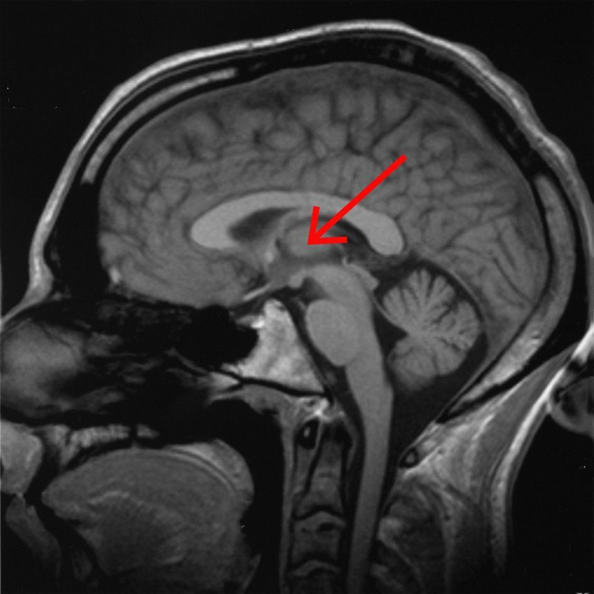
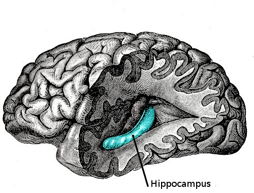
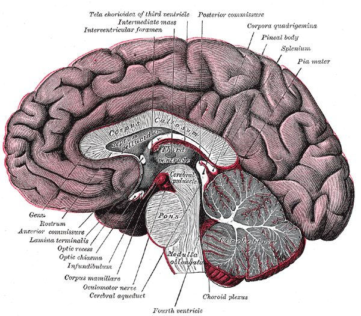
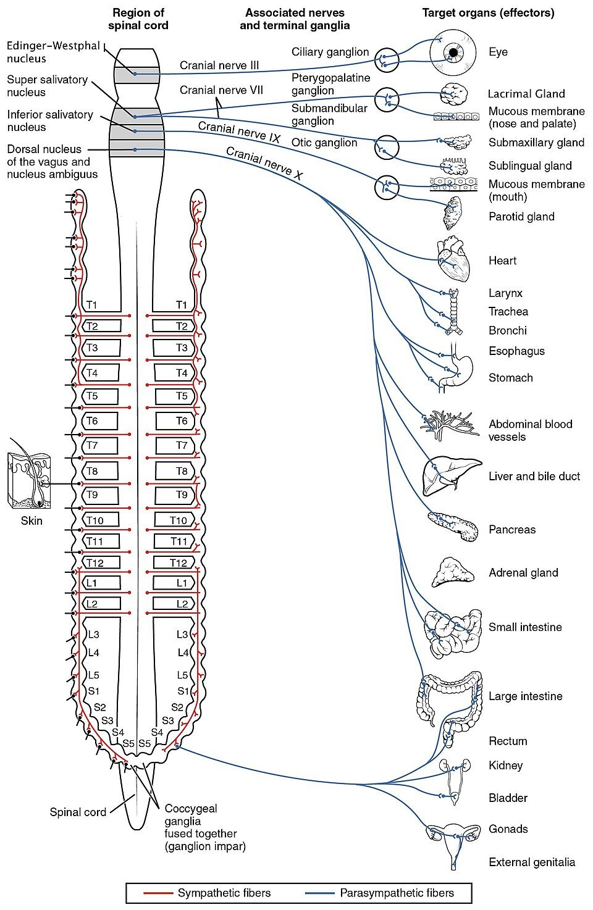
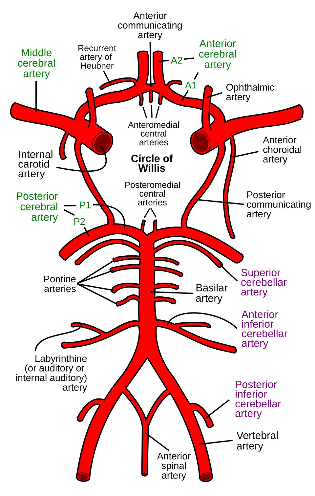

El mapa del sistema nervioso
Neuronas, sinapsis, glía, corteza y lóbulos, cerebelo, ganglios basales, tronco, médula, nervios, sistema autónomo y circulación cerebral.
Células y señales
 Células y señales
Células y señalesLa neurona
La célula que piensa: recibe señales por sus dendritas, las integra en el cuerpo celular y las transmite por el axón. El cerebro tiene unos 86.000 millones.
Leer → Células y señales
Células y señalesSinapsis y neurotransmisores
El punto de contacto entre dos neuronas y las moléculas que llevan el mensaje: glutamato, GABA, dopamina, serotonina, acetilcolina y otras. Base de la memoria y diana de muchos fármacos.
Leer →
Células y señalesGlía y mielina
Las células que no son neuronas: astrocitos, oligodendrocitos, microglía y células de Schwann. Sostienen, nutren, aíslan y defienden el sistema nervioso, y participan en muchas enfermedades.
Leer →El encéfalo
 El encéfalo
El encéfaloCorteza cerebral y lóbulos
La capa externa y plegada del cerebro, de pocos milímetros de grosor, donde se procesan la percepción, el movimiento voluntario, el lenguaje y el pensamiento. Qué hace cada lóbulo.
Leer → El encéfalo
El encéfaloCerebelo
El «pequeño cerebro» situado detrás del tronco coordina los movimientos, el equilibrio y el aprendizaje motor. Tiene más neuronas que todo el resto del cerebro.
Leer →
El encéfaloGanglios basales
Núcleos profundos que seleccionan qué movimientos se hacen y cuáles se frenan, y participan en la motivación y los hábitos. Su alteración causa el párkinson, la corea o la distonía.
Leer → El encéfalo
El encéfaloTronco del encéfalo
Une el cerebro con la médula espinal y controla funciones vitales como la respiración, el ritmo cardiaco y la consciencia. Por él pasan casi todas las vías y nacen la mayoría de los nervios craneales.
Leer →
El encéfaloTálamo e hipotálamo
El tálamo es la estación de relevo de casi toda la información que llega a la corteza; el hipotálamo, el centro de control del hambre, la sed, la temperatura, el sueño y las hormonas.
Leer →
El encéfaloHipocampo y sistema límbico
Las estructuras que forman los recuerdos y dan color emocional a la experiencia: hipocampo, amígdala, cíngulo y sus conexiones. Lo que nos enseñó el paciente H. M.
Leer →
El encéfaloCuerpo calloso y hemisferios
Los dos hemisferios cerebrales no son iguales y se comunican por el cuerpo calloso, un puente de 200 millones de fibras. Lo que enseñaron los pacientes con «cerebro dividido» y los mitos sobre el cerebro izquierdo y derecho.
Leer →Médula y nervios
 Médula y nervios
Médula y nerviosMédula espinal
El cable que conecta el cerebro con el cuerpo, protegido dentro de la columna. Lleva órdenes y sensaciones, y por sí sola organiza reflejos y patrones de movimiento.
Leer → Médula y nervios
Médula y nerviosNervios craneales
Los doce pares de nervios que salen directamente del encéfalo y se ocupan del olfato, la vista, los movimientos de los ojos, la cara, el oído, la deglución y mucho más.
Leer → Médula y nervios
Médula y nerviosNervios periféricos
La red de nervios que conecta la médula con la piel, los músculos y los órganos. Cómo están hechos, qué fibras tienen y por qué pueden regenerarse, a diferencia del cerebro.
Leer →
Médula y nerviosSistema nervioso autónomo
El piloto automático del cuerpo: regula el corazón, la tensión, la respiración, la digestión, el sudor y la vejiga sin que lo pensemos. Simpático para la acción, parasimpático para el descanso.
Leer →Protección y riego
 Protección y riego
Protección y riegoMeninges, ventrículos y líquido cefalorraquídeo
Las tres membranas que envuelven el cerebro y la médula, las cavidades llenas de líquido que hay en su interior y el líquido que los protege y limpia.
Leer →
Protección y riegoCirculación cerebral
El cerebro pesa un 2 % del cuerpo pero recibe un 15-20 % de la sangre. Cuatro arterias, unidas en el polígono de Willis, lo riegan. Por qué unos minutos sin sangre bastan para dañarlo.
Leer → Protección y riego
Protección y riegoBarrera hematoencefálica
Un filtro muy selectivo entre la sangre y el cerebro que protege a las neuronas de tóxicos y microbios, pero también impide el paso de muchos fármacos.
Leer →